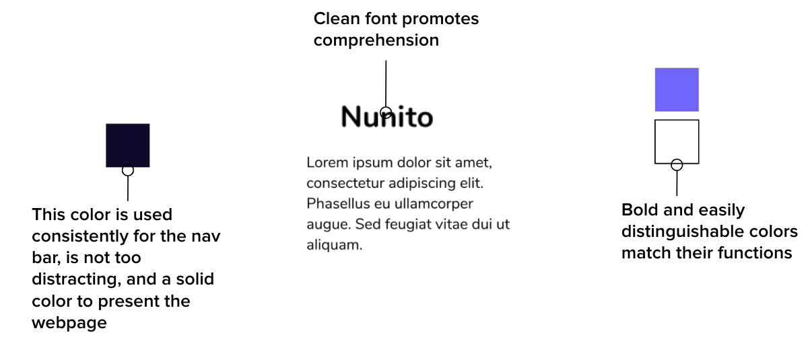

It is crucial to familiar myself with the flipped-classroom style of teaching.
At first hand, we can see that there are three main pages that are accessible.
Dashboard
Allows users to view their current classes
Assignments
Immediately, assignments are in tabs that allow for the user to quickly view
when the quizzes
start and end, and what percent proficiency they must reach in order to obtain full points.
Before starting the design process, it is important that I understand what I'm looking for and
focus on what works well and what does not with the audience.
1. Understand instructors tasks and goals when accessing the site
2. Understand how quick instructors would want to access these tasks
3. Understand what questions the user may need answers for
Luckily, the head of YANTRA who I am working with is also an instructor. I was able to ask him
quick questions about what he would want to see in an application like this.
With the perspective and answers he gave, I was able to create an persona.
After reviewing my instructors answers, a person was developed to make sure that the design fulfills the requirements and tasks.
My first task was to improve the class and quiz view. I made quick wireframes and user flows to
show how the user can quickly access features.
To make sure the pages are organized and aesthetically pleasing, I made sure the colors and fonts were cohesive and consistent.
